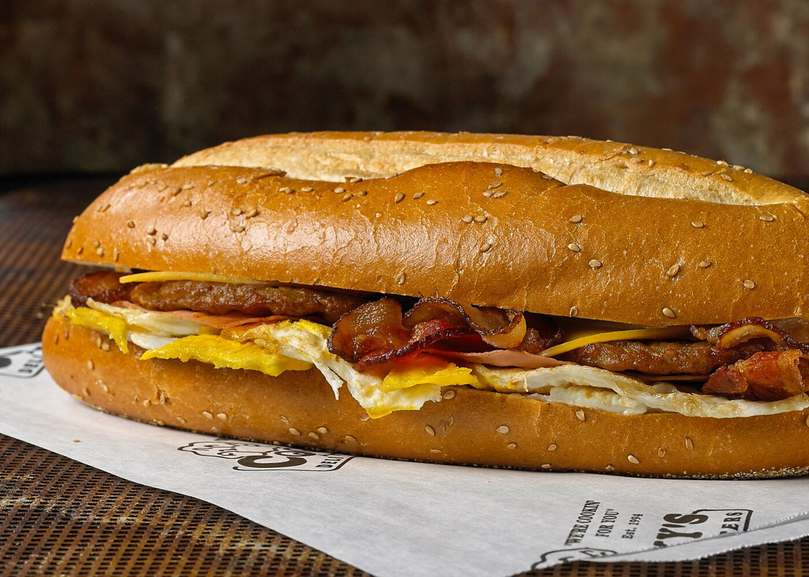

Deli-Inspired Bacon, Egg, and Cheese

I live next to a deli. They make an assortment of sandwiches but this one in particular always strikes as so delicious every time I bite into it. I practically grew up eating this out of deli’s across my high school years.
Now that I’m an adult, I say screw that! I can make one at home that can be made quick in the morning!
You’re gonna want really good bacon for this recipe. I prefer using Jimmy Dean’s hickory smoked bacon. Avoid using bacon brands like Oscar Mayer, their bacon is quite lacking in texture and flavor. The better the quality the more flavor and texture you can get out of this recipe.
The first 3 steps could be done in a toaster oven if you’d like, or if you don’t want any butter then avoid the first 3 steps. Still make sure your bread is cut in half horizontally.
Ingredients
- Hoagie rolls (or any other long roll)
- 2-3 Slices of bacon
- 1-2 Eggs
- 2-3 Slices of american cheese (or any other cheese of your liking)
- Butter (optional)
- Salt
- Black pepper
- Mayonnaise (optional)
- Ketchup
- Aluminum foil (optional)
Recipe Steps
- Ready a pan with hot butter and let it warm up till it’s sizzling, make sure your bread is cut horizontally in half.
- Place your bread on the butter and let it toast.
- After some time, take the toasted bread off the pan.
- Place 2-3 slices of american cheese on the hot bread.
- Now add 2-3 slices of bacon to your pan and lower the flame to medium or medium-high.
- Let the bacon cook for +4 or so minutes until crisp, flip bacon if necessary.
- Place the bacon on the bread, on top of the cheese. (You could also transfer the bacon to a plate with paper on it, if you’re health conscious. However, dry them off the bacon grease 1st and move them right onto the cheese. You want the hot bacon to melt the cheese overtime.)
- Now check your pan, if you have an excess amount of bacon grease (say, a big puddle of it) then pour to another pot some of the bacon grease. You want some grease for your eggs but not a whole puddle of it.
- Now I do this egg by egg, crack your 1st egg on the hot pan, you want it on medium heat.
- You could make your egg the way you like it, fried or scrambled. I prefer mine fried and not runny.
- Season with salt but be conservative, the bacon grease is already salty on its own so keep that in mind.
- Season with pepper.
- Once cooked, move the egg to your bread on top of the bacon. (Again you can dry off the egg like the bacon for health reasons but do not let the egg run cold. Dry and place on bread quickly to not lose any heat.)
- Repeat steps 9-13 with the 2nd egg.
- Now add your condiments on top of the egg. Ketchup, and mayo if you’d like.
- (Optional!) Once assembled, wrap your sandwich in aluminum foil and let it rest for 3-5 minutes.
- Cut in half with a knife or unwrap it and enjoy!